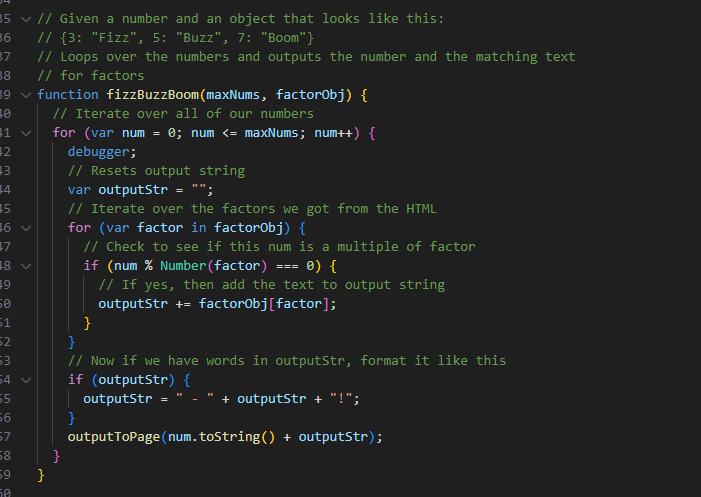

Lab 14: Debugging Tools & Strategies
Challenge
Working with your partner, use your debugging knowledge to fix old assignments.
Problems
I didn't really have much to do for this lab, but I did add some debugging to my previous labs' code. I feel like I really understand how the basics work for coding, and I am confident in my ability to be able to create simple code.
Results
You are looking at the results of my HTML file here. Take a look at the debugging section to get a better idea of what I did for this lab!
Debugging
Most of the work done here will just be adding a debugging function to my previous code, in order to make it pause a function and allow me or the user to take a look at the state of the code to insure that everything is okay.
